DESKTOP TODO · STATIC PROTOTYPE v2.1
桌面待办，
把任务放在桌面上
纯本地的 Windows 桌面 TODO：完整窗口负责管理与筛选，桌面挂件负责随时看见、随手勾选，收起胶囊只保留今天的进度。每条任务可挂网页、文件夹、UNC 路径和本地文件，点一下就打开对应地址。
先看见，再管理桌面挂件常驻，不打开主程序也知道今天还剩什么。
任务行不折叠标题、链接、标签、优先级、到期时间一眼判断，不在层级里找信息。
链接挂在任务下文件夹进资源管理器，网页进默认浏览器；拖拽即挂载。
筛选留在桌面上状态、标签、日期、优先级、关键词五个维度随时切换。
01
同一份数据的三种形态
PRODUCT FORMS完整窗口负责管理与筛选；挂件负责桌面常驻；胶囊负责极简提醒。三者共享同一份数据。

完整窗口 · 管理视图左侧导航（收件箱 / 今天 / 已逾期 / 即将到期 / 已完成 / 项目 / 标签）+ 主区今天视图；顶部状态、进度环与新建；底部常驻输入框。项目与标签分区标题右侧的铅笔管理入口，在数据变多时固定可见。

桌面挂件 · 主入口浮于壁纸与窗口之上，默认展示今天；可拖动、置顶、调透明度，右下角收起为胶囊。任务行内直接勾选，链接直接打开。
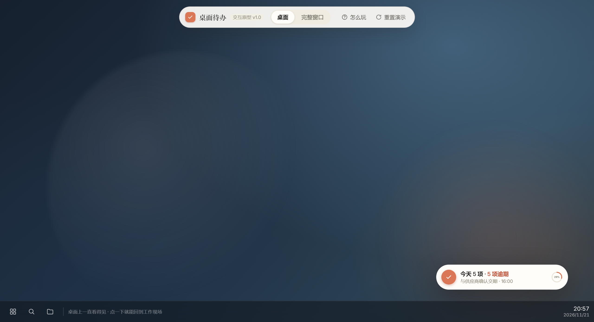
收起胶囊 · 只留今天进度显示今日任务数、逾期数、最近到期项与完成度；双击展开完整窗口。收起状态会被记住，下次打开保持上次状态。
02
任务、链接与时间
TASK & LINK任务不是一张卡片：勾选框、标题、标签、优先级、到期时间、链接都在同一行里可见、可点。
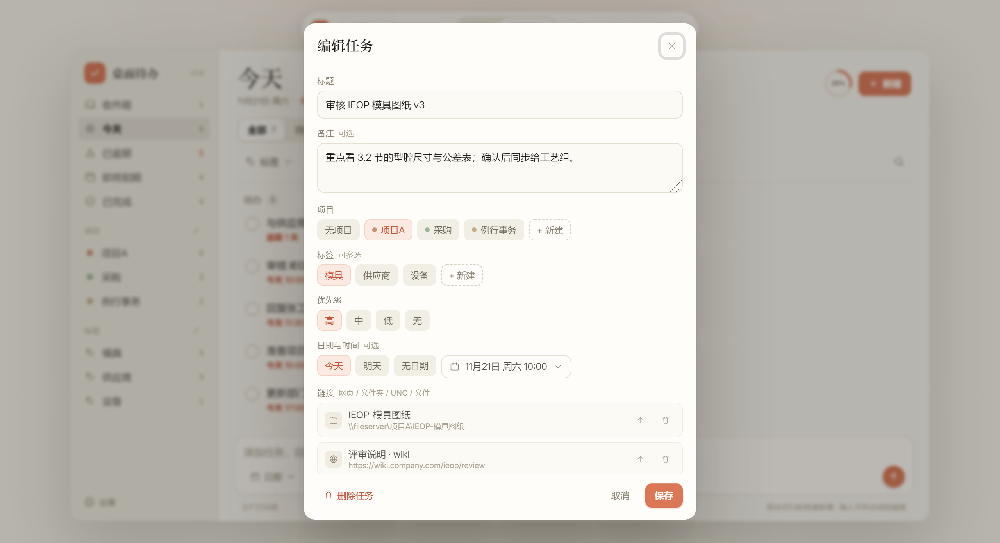
编辑任务 · 多链接挂在任务下一条任务可挂多个链接；文件夹用资源管理器打开，网页用默认浏览器打开，UNC 共享路径会先探测可达性。链接保存为绝对路径，移动位置后打开会提示重新定位。
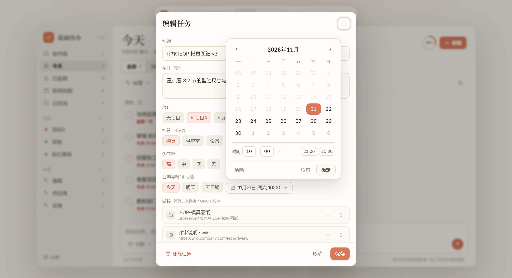
自定义日期时间不用系统原生控件；今天之前日期置灰，当天已过去时间不可选；只保留 2 个常用快捷时间。到期时间早于当前时刻即视为逾期，同一天已过也显示「已逾期 N 小时」。
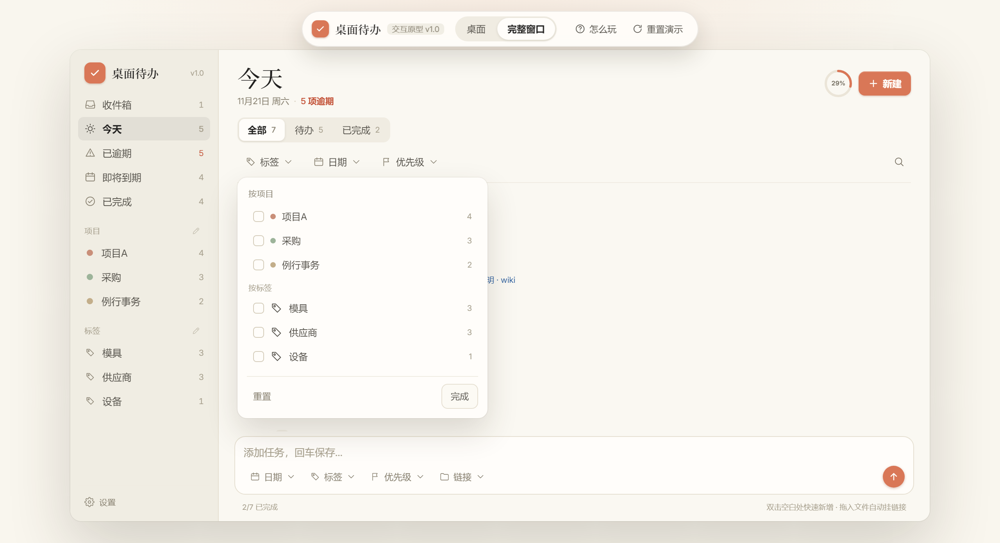
五维筛选 · 桌面直接切状态 Tab、标签、日期、优先级、关键词搜索；筛选条件常驻窗口内，不跳设置页。项目与标签在同一个下拉内分组展示。
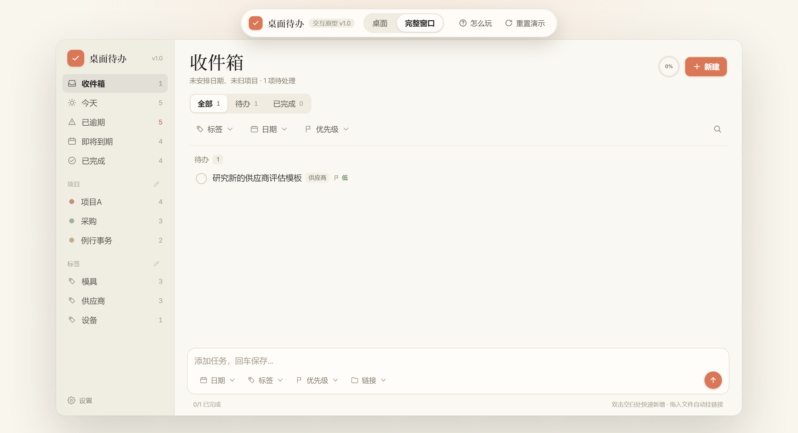
收件箱 · 未安排日期、未归项目收件箱只接住「还没有落位」的任务；一旦设置日期或项目就离开。计数只算未完成，避免重复出现在项目视图里。
03
项目、标签与安全删除
ORGANIZE & GUARD管理入口分两层：设置里整体管理项目与标签，分区标题右侧只管理对应类型；删除有关联数据时必须二次确认。
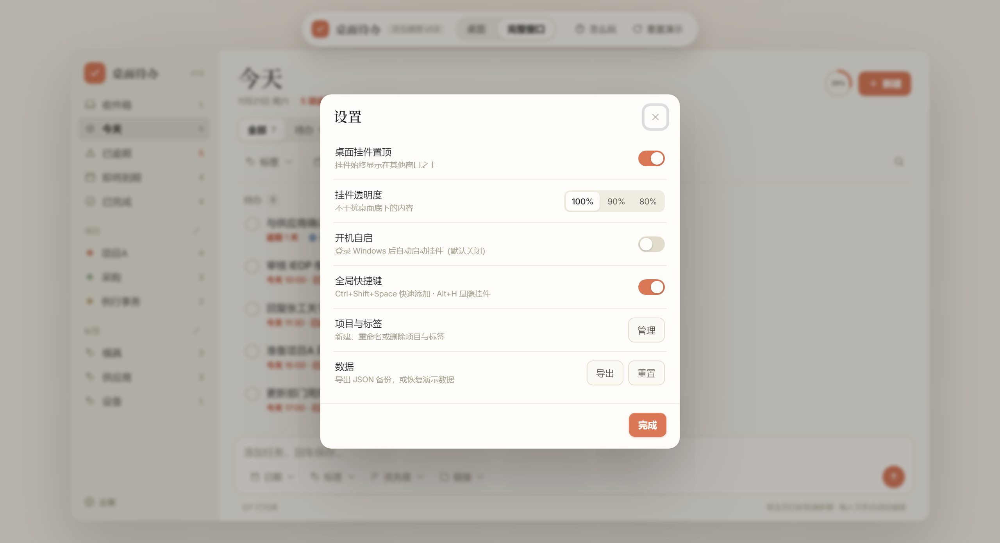
设置 · 整体管理入口设置 →「项目与标签」→ 管理，打开完整管理弹窗，同时管理项目与标签。
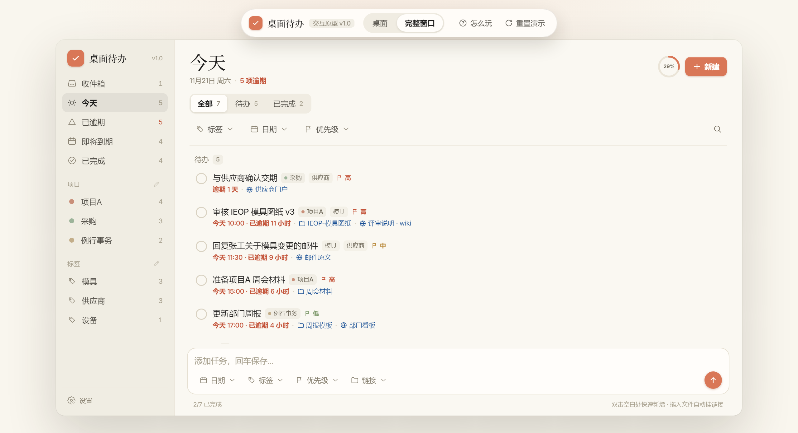
侧栏 · 单项管理入口项目、标签分区标题最右侧的铅笔按钮，只打开对应单项管理；关闭后回到原视图。
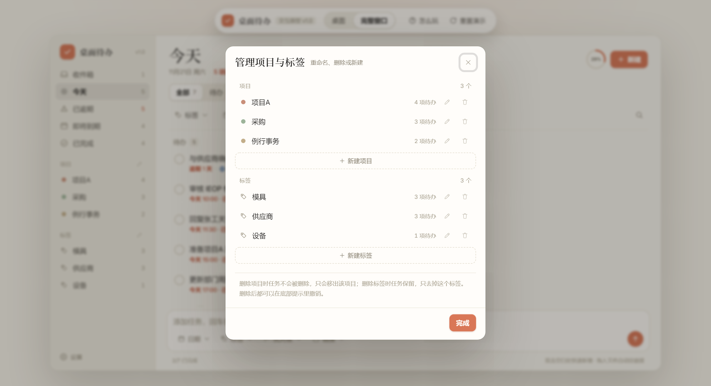
管理项目与标签新建、重命名、删除；删除项目不会删除任务，只把任务移出项目；删除标签只去掉标签。删除后仍可在底部提示里撤销。
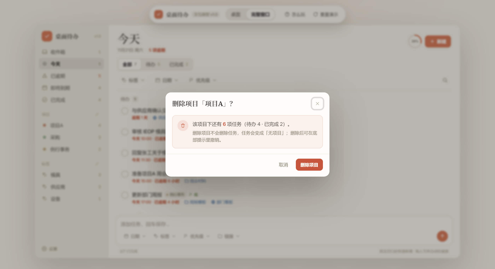
删除二次确认 · 仅有关联数据时出现先显示关联任务总数（待办 / 已完成），明确告知任务不会被删除；取消 / Esc / X 返回原管理弹窗；没有关联数据时直接删除，不做多余拦截。
04
边界状态也保持可用
EDGE STATES数据变多时侧栏导航区滚动、footer 固定；项目 / 标签管理范围切换时标题与说明跟着变。
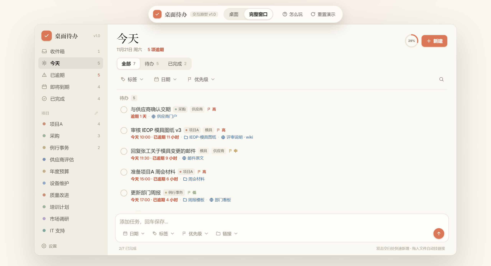
侧栏溢出 · 导航滚动，设置固定项目与标签再多，导航区内部滚动，品牌与底部设置始终可见、可点。
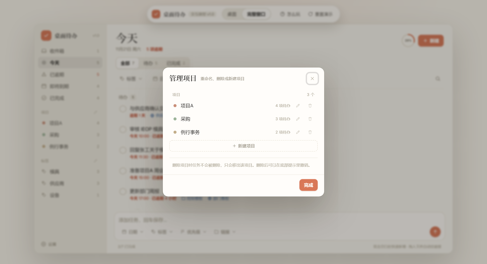
单项管理 · 只出现对应段从侧栏项目铅笔进入时，标题、说明、帮助文案都只讲项目；标签入口同理。不把两类对象混在一个弹窗里操作。
05
实现边界与交互约定
CONTRACT静态原型只用于视觉验收；真正的打开链接、拖拽文件、托盘与全局快捷键由 Electron 正式版实现。
SCOPE纯本地，不出内网
- 数据SQLite，运行时位于 %APPDATA%\DesktopTodo\data.db
- 网络不发起任何外部请求；UNC 仅在内网探测
- 链接http/https → 默认浏览器；本地路径 / UNC → 资源管理器
- 安全只允许受控协议；禁止 file://、javascript: 与 shell 拼接
CONFIRMED已确认的交互决策
- 收起态下次打开保持上次收起状态
- 快捷时间只显示 2 个，按当前时间动态计算
- 逾期到期时间早于当前即逾期，同日已过也显示
- 过去时间选择器置灰，键入过去值会被拦截